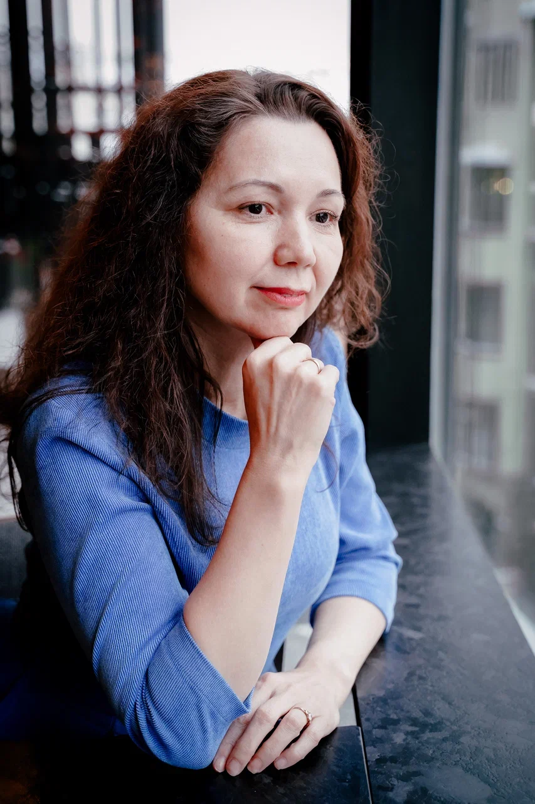
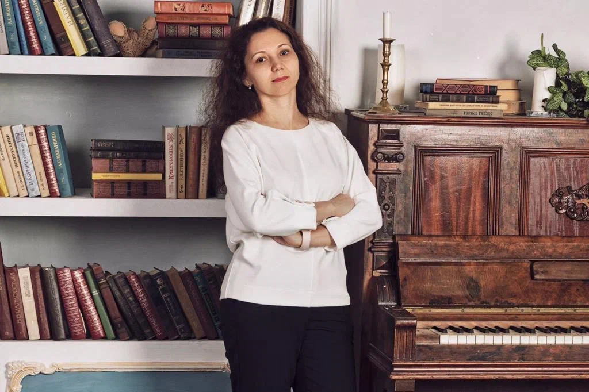

Чаще всего причина не в лени и не в тайм-менеджменте. Половину задач вы делаете не своим способом — и они забирают втрое больше сил, чем должны. Я нахожу, какие именно, и помогаю их переставить.
Если хотя бы одна — про вас, нам есть о чём поговорить. Если ни одна — честно скажу об этом на первой встрече.
Дела закрыты, список вычеркнут, а внутри пусто. Обычно это значит, что вы живёте в чужом формате: делаете задачи способом, который вам не родной.
Времени нет ни на что, при этом результат не растёт. Дневник времени почти всегда показывает: половина часов уходит на то, что вы вообще не должны делать.
Передаёте людям — возвращается хуже, чем сделали бы сами. Чаще всего дело не в людях, а в том, что задачу отдали человеку другого формата мышления.
Вы знаете, как помогать людям, а объяснить это словами и упаковать в продукт не получается. Текст выходит про метод, а не про результат клиента.
Выбор «куда поступать» делается по престижу вуза или по тому, что сказали родители. А не по тому, как ребёнок на самом деле думает и где ему будет легко.
Оборот стоит на одной цифре несколько месяцев. Идей много, вы беретесь за всё подряд — и ни одна не доходит до денег.
Детали — с согласия клиентов.
Салон работает, деньги есть, но всё держится на ней одной: администраторы, соцсети, юрвопросы, закупки. На себя времени не остаётся совсем. Ребрендинг начат и брошен — на картах одно название, в соцсетях другое.
Определили формат мышления: объём «Мы», тип — системный-презентатор. Разложили работу на четыре блока: люди и её время, бизнес-тренерство, применение таланта, личное. Собрали дневник времени. Отдельно разобрали, почему салона не видно в поиске: у конкурентов 2–3 рубрики на карточке, у неё одна — салон не показывался в 8 запросах из 12.
Дневник времени показал главного пожирателя — маркетинговую рутину. Сейчас переводим работу с тремя специалистами на ИИ-агентов и полную автоматизацию. По расчёту это освобождает около половины её рабочего времени. И это время уходит не в новые задачи, а туда, где она сильна по формату: на людей, развитие и то, что умеет только она.
Пришла за скорочтением — казалось, что проблема в скорости: не успевает прочитать и запомнить объём, который требует университет.
Начали со скорочтения, дальше перешли к умению учиться: как работать с материалом так, как устроено её мышление, а не так, как «принято». Когда стало видно её формат, выяснилось главное — выбранная экономика ей не подходила совсем. Разобрали, какая профессия ближе к её способу думать.
Сменила направление и сейчас работает в журналистике — в профессии, которая совпадает с её форматом мышления. Два года спустя мы по-прежнему работаем вместе.
Чтобы вы понимали, за что платите и что будет происходить по дням.

Двадцать пять лет в образовании. Начинала учителем информатики в сельской школе под Калининградом, дошла до завуча по инновациям, работала в команде «Школы будущего» Алексея Голубицкого, создала Всероссийскую олимпиаду по 3D-технологиям. Потом Петербург и должность завуча по учебно-воспитательной работе в государственной школе.
В 2021 году открыла свою — «Клуб РЕЛЕ». Пространство на 400 метров без классов и звонков, разновозрастная группа, профориентация с 12 лет через формат мышления, тестируем всю семью. Руковожу ей до сих пор. Это значит, что я не теоретик: я каждый день вижу, как разные люди думают по-разному и что из этого получается.
С методом «Формат мышления» работаю с 2014 года — познакомилась с ним и с его автором Александром Ляминым ещё в «Школе будущего». Написала книгу-исследование «Качество мышления. Четыре формата мышления». Сейчас учусь в аспирантуре ЛГУ им. Пушкина по педагогике и собираю на базе метода платформу тестирования.
«Ваш формат мышления — не диагноз. Это способ понять себя и начать принимать решения из своей силы».
Начать можно бесплатно — с пятнадцати минут. Дальше вы сами решите, нужно ли вам дальше.
Разбираем одну вашу задачу. Вы приходите с вопросом, который крутится в голове, и уходите с пониманием, что с ним делать.
ЗаписатьсяГрупповая встреча на 1,5 часа. Разбираем ваш список дел: что убрать, что передать и чем заправляться именно вам — с учётом вашего формата мышления.
ЗаписатьсяЛичное сопровождение 14 дней: диагностика, дневник времени, пересборка дел и план на два месяца. Подробно расписано выше.
ЗаписатьсяДиагностика формата мышления ребёнка и разбор с ним и с вами: что ему будет даваться легко, а где он будет выгорать. За 15 000 ₽ — плюс подбор вуза и профиля обучения.
ЗаписатьсяФорматы мышления партнёров и детей рядом: почему вы говорите об одном и не слышите друг друга и на каком языке разговаривать, чтобы доходило.
ЗаписатьсяКарта форматов всей команды: кто на каком месте уместен, где проседает климат, кто рискует уйти. Отчёт и стратегическая сессия с руководителем.
Обсудить«Татьяна Анатольевна — это подарок Бога. Талантливая, многогранная, ответственная, пунктуальная, позитивная, энергичная, терпеливая, мягкая, знающая всё))) Если жизнь свела Вас с Татьяной Анатольевной, вы точно счастливчик судьбы — и вас ждут радикальные изменения (при условии, что вы тоже много работаете, а не ждёте магии от занятий). Мы работаем уже два года, и какой бы у меня ни был вопрос, я в первую очередь обращусь к Татьяне: знания и практику, связанную с работой мозга и мышления, доступнее и интереснее не передаст никто другой. Я всегда получаю именно то, за чем обращаюсь, и даже больше. Спасибо Вам огромное ❤️»
Этот блок — для тех, кому важно понимать механику. Если вам достаточно результата, можете его пропустить.
Метод «Формат мышления» описывает не характер и не темперамент, а то, как вы обрабатываете информацию и принимаете решения. Он построен на психометрическом тесте и запатентован (метод А. Лямина, патент №2626248). Диагностика — 152 вопроса, около 25 минут.
Карта строится по двум шкалам. На их пересечении получается 27 форматов — чистых и смешанных. У каждого есть своя карточка: сильные и слабые стороны, подходящая среда и профессии.
Какой масштаб вам комфортен. Один человек живёт задачами своей жизни, другой мыслит командой, третий не может работать, если не видит, как это меняет мир целиком.
Собираете в систему, объясняете и зажигаете, раскладываете на детали или мыслите образами. Чистых типов мало — чаще человек стоит между двумя соседними.
Книга-исследование о том, как мы думаем и принимаем решения. Через историю героини Анны и четыре формата мышления — приглашение не поставить себе диагноз, а научиться замечать собственный способ думать.
Получить книгу
Научный метод: психометрический тест на основе исследований, запатентованный (метод А. Лямина, патент №2626248). Диагностика — 152 вопроса. Результат про реальные особенности вашего мышления, а не про знак зодиака.
Тест — около 25 минут онлайн, в любое удобное время. Разбор со мной — встреча на 2–2,5 часа.
Диагностика — онлайн. Разбор — онлайн или очно в Петербурге, как вам удобно.
Да. Половина запросов не про деньги, а про «делаю много, а будто не своё», про отношения в семье и про выбор пути для ребёнка. Формат мышления работает одинаково и там, и там.
Тест сам по себе ничего и не меняет — он только показывает карту. Меняет разбор и то, что вы после него переставляете в своих делах. Поэтому диагностика у меня никогда не продаётся отдельно от встречи.
Ноль. Первые 15 минут бесплатно, разбираем одну вашу задачу. Дальше решаете сами: платная работа начинается от 3 000 ₽ в группе и от 15 000 ₽ лично.
Пятнадцать минут. Вы приходите с вопросом, который крутится в голове, и уходите с пониманием, что с ним делать.
15 минут ясности — бесплатно